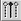

Format menu
Menu item |
Action |
|---|---|
No Format |
Show all defined pins and groups of the currently selected port |
New |
Create or modify a user defined format. You can choose the pins or pin groups which are displayed. |
Load |
Load a user defined format |
Save |
Save a user defined format |
Edit |
Modify a user defined format |
Selected Pins  |
Show only the test results of one or more pins. Choose the pins first and then use this menu item. |
Organize |
Organize or delete user defined formats |
Functional changes
- Introduced before SmarTest 6.3.2